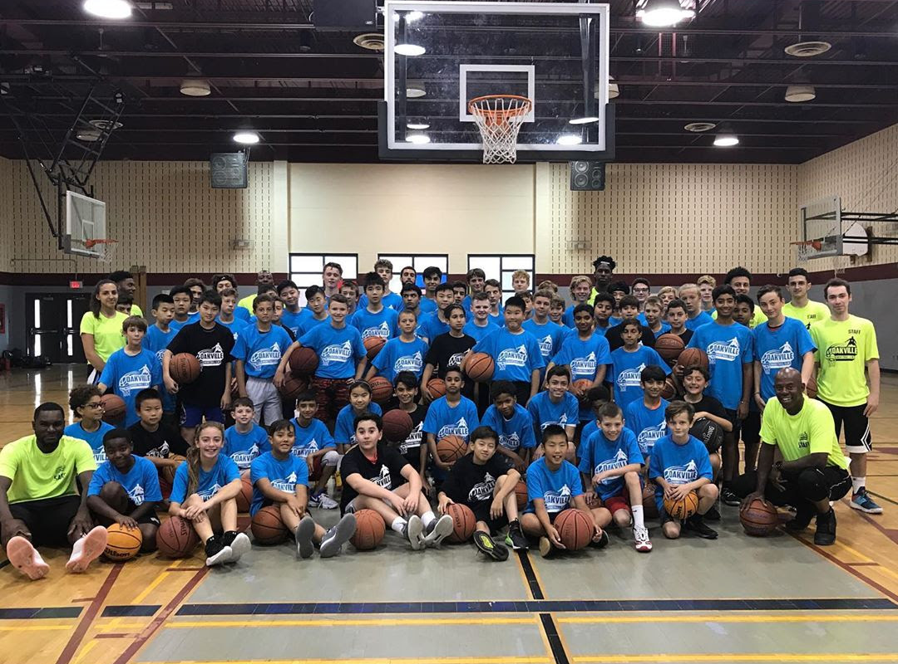
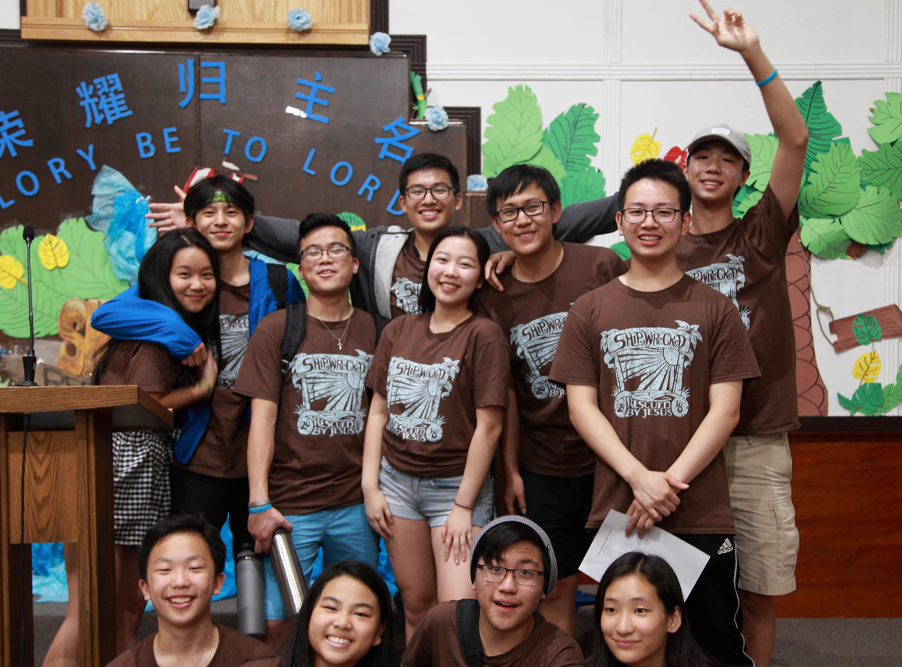
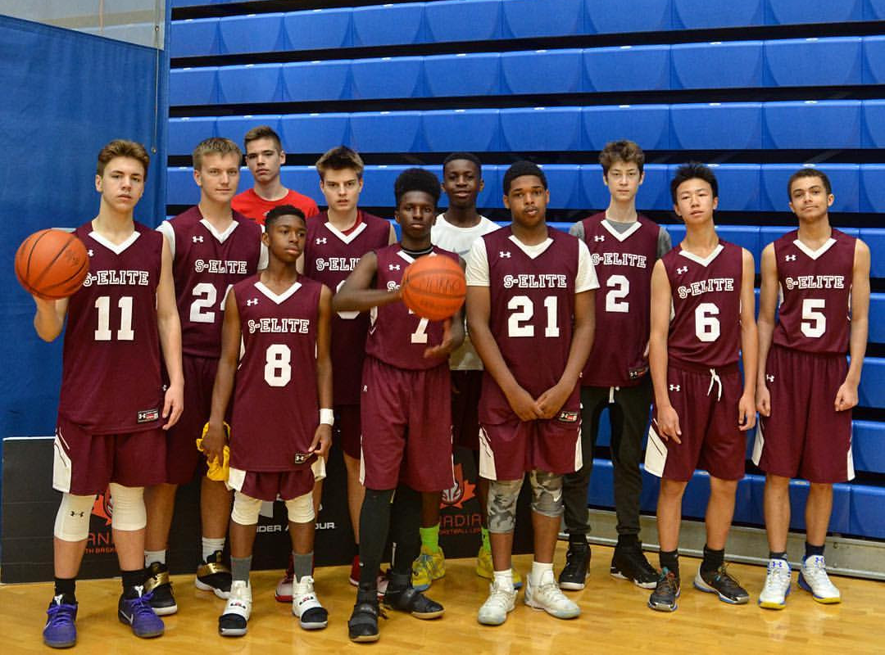

Hey! I'm Jason Zhang.
- Lifetime Student & Occasional Programmer.

👨💼 Food Server
Miga is a renowned establishment in the GTA for over 15 years, acclaimed for its quality of food and service. I have been working for more than a year as a member of an exceptional team.
📍 Miga Korean BBQ
👨💼 Chairman
On the action team, I was able to work alongside town departments and organizations to direct community intiatives such as Youth Week and Mental Health Outreach.
📍 "D-Stress" Self-Care Event

👨💼 Development Coach
Joining the Oakville Basketball Club as a coach was a very fulfilling experience. Every week, I am able to encourage the growth and improvement of young players in attaining their full potential.
📍 Winter Development Program
👨💼 Camp Counsellor
Over the last 5 years, I have volunteered as a youth group leader at VBS. There, I help children learn about the gospel in a fun, age-appropiate and interactive manner.
📍 Milton Missionary Baptist Church
👨💼 Representative Player
Stags Elite is a prominent AAU grassroots basketball program. As a member of the team, I competed in several national-level tournaments and developed valuable team skills.
📍 Canadian National Invitational
👨💼 Video Executive
Through my videos, I hope to spread important messages and inspire students to become involved. Check out the channels!

Tanky Offline is an application inspired by the arcade game 'Tank' with dual-user compatibility. The project was created within a 12-hour time frame for Ridge Hacks as part of the 2018 MLH Local Hack Day series. Out of a pool of around 80 competitors, the project was awarded the "Best Overall Hack" of the event.
GithubSince Windows 10 doesn't come with Minesweeper, I, an avid gamer, decided to make my own version of the game called "Bomb Squad". The program is built on Pygame engine and comes with similar assets found in the original as well as features like different difficulty levels and a music soundtrack.
GithubPhysics has always been one of my favourite subjects —there's nothing more satisfying that understanding the world around us. After visiting Taiwan last year and seeing the world's largest tuned mass damper in person, I became fascinated with the concepts of pendulums and decided write a research paper on the topic.
My Paper